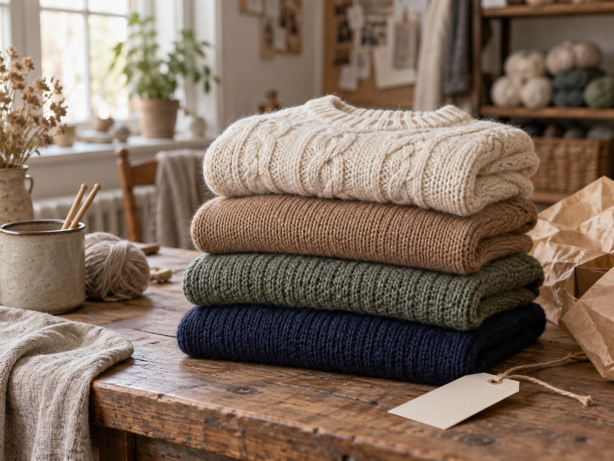

데님에는 가디건, 셔츠에는 니트 베스트. 익숙한 옷들과 편하게 어울리는 국내 생산 니트를 만나보세요.
스마트스토어에서 구매할 수 있는 여성 니트·조끼·가디건입니다. 상품별 소재와 실측 정보를 함께 확인해 보세요.

기획부터 생산까지 직접 관리한 니트를 소개합니다. 상품마다 소재, 실측, 색상과 관리 방법을 확인할 수 있도록 정리합니다.
상품별 전체 리뷰와 판매자 답글은 스마트스토어 상품 페이지에서 확인할 수 있습니다.
코디 스타일링에서 니트 색상과 하의·신발 조합을 비교할 수 있습니다.
8방향 이미지가 준비된 상품은 상세페이지에서 여러 각도의 코디를 확인할 수 있어요.
상세페이지의 가슴 단면과 총장을 갖고 있는 편한 옷의 치수와 비교해 보세요.